A few months ago, I had several conversations with clients and colleagues who reached out with questions about Merchandising eVars in Adobe Analytics. The questions were primarily around the difference between Product Syntax and Conversion Variable Syntax, how values get associated with individual products, and, more importantly, how Adobe determines which value receives credit when a product is eventually purchased.
At first glance, merchandising eVars might seem like just another configuration within Adobe Analytics. However, understanding how they work requires looking beyond simply setting an eVar value. Concepts such as product binding, binding events, and allocation play a critical role in determining how conversion credit and revenue are attributed to individual products.
I have found that this is one of those topics where understanding the underlying mechanics makes a significant difference in how we interpret reporting data and design our measurement strategy.
Although Product Syntax and Conversion Variable Syntax are specific to Adobe Analytics implementation, the underlying concepts of product-level association, persistence, and attribution remain highly relevant when working with Customer Journey Analytics (CJA).
In fact, Adobe has carried the merchandising concept into CJA through a capability called Binding Dimensions and Binding Metrics. While the implementation and data modeling approach differ, the objective remains similar: associating the right interaction or finding method with the right product to support accurate business analysis.
I thought this would be a good opportunity to revisit the concept, explain it with practical examples, and highlight how different configurations influence the data we eventually use to answer business questions.
Let's start with the fundamentals.
1. First, What Is a Merchandising eVar?
Before getting into the two implementation approaches, let's understand why merchandising eVars exist.
In a traditional Adobe Analytics implementation, an eVar captures a value and maintains it according to its configured expiration and allocation settings. This works well for many conversion attribution use cases.
However, consider an e-commerce scenario.
A visitor searches for products, views multiple products, adds some of them to the cart, and eventually makes a purchase.
Imagine the following journey:
- The visitor discovers Product A through an internal keyword search.
- The visitor discovers Product B through a promotional campaign.
- Both products are added to the cart.
- The visitor purchases both products in a single transaction.
If we use a conventional eVar to capture the finding method, how do we ensure that the revenue from Product A is attributed to internal keyword search while Product B receives credit for the promotional campaign?
This is where Merchandising eVars come into play.
A merchandising eVar allows us to associate an eVar value with an individual product rather than simply attributing the value at the visitor or conversion level.
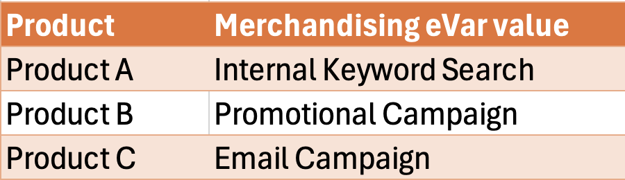
When these products are eventually purchased, Adobe can use these product-level associations to attribute the corresponding revenue to the appropriate merchandising value.
The important concept here is Binding.
Binding is the process through which Adobe associates a merchandising eVar value with a product.
Adobe Analytics supports two approaches to achieve this:
- Product Syntax: The merchandising eVar value is embedded directly within the products variable.
- Conversion Variable Syntax: The merchandising eVar value is first set in the eVar and subsequently associated with products through a configured binding event.
Let's understand how each approach works.
2. Product Syntax – Directly Binding an eVar Value to a Product
With Product Syntax, the merchandising eVar value is set directly inside the products variable.
The value appears after the last semicolon in each product entry.
The general syntax is:
s.products = ";productID;;;;eVar1=value";The product string follows this structure:
Category;Product;Quantity;Price;Events;Merchandising eVarsFor example:
s.products = ";12345;;;;eVar1=internal keyword search";Here:
- 12345 represents the product ID.
- eVar1 is the merchandising eVar.
- internal keyword search is the value associated with that product.
The important distinction is that the value is immediately bound to product 12345 on that hit.
You do not need a separate binding event.
Example 1: The same product receives two different values
Consider a visitor who interacts with the same product through two different finding methods.
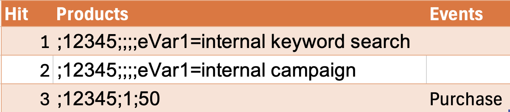
The same product, 12345, receives two different merchandising values across two hits.
Now consider the Allocation setting.
Original Value (First)
- On Hit 1, Product 12345 is associated with internal keyword search.
- On Hit 2, Adobe encounters another value, internal campaign, for the same product.
- Since the product already has an established binding, the new value is ignored.
- When the product is purchased, the revenue is credited to internal keyword search.
Most Recent (Last)
- On Hit 1, Product 12345 is associated with internal keyword search.
- On Hit 2, the product receives a new binding, internal campaign.
- The latest value replaces the previous product association.
- When the product is purchased, the revenue is credited to internal campaign.
This illustrates how Allocation determines whether an existing product association is retained or replaced when another binding attempt occurs.
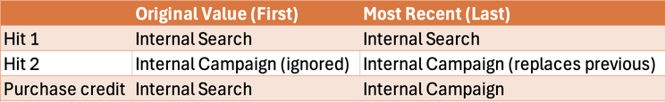
Example 2: Two products receive different values
Now consider a slightly different scenario where the visitor interacts with two different products.
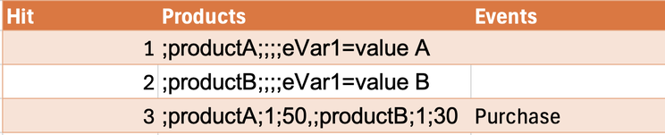
In this example:
- Product A is associated with Value A.
- Product B is associated with Value B.
When both products are purchased in the same order:
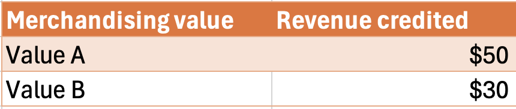
Both values also receive credit for one order because the transaction contains a product associated with each value.
Notice that the Allocation setting does not influence this example. Neither product receives a second binding attempt, so there is no conflict between an existing and a new value.
Example 3: Same product ID with different child SKUs
Another interesting use case is when an e-commerce business uses a parent product ID but sells multiple product variations.
Imagine a T-shirt retailer selling:
- Medium Blue T-shirt
- Large Red T-shirt
Both products share the parent product ID tshirt123, but each has a different child SKU.
Suppose eVar10 captures the child SKU.
The implementation could look like this:
s.events = "purchase";
s.products = ";tshirt123;1;20;;eVar10=tshirt123-m-blue,"
+ ";tshirt123;1;20;;eVar10=tshirt123-l-red";Here, each product instance receives its own merchandising value, even though both entries share the same parent product ID.
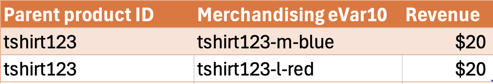
This is particularly useful when the business needs to understand performance at the product-variation level rather than only at the parent product level.
When should you use Product Syntax?
Product Syntax is especially useful when:
- Different products on the same hit need different merchandising values.
- You already have the relevant finding method information when the product interaction occurs.
- You want to bind a value directly without configuring binding events.
The limitation is that you must explicitly include the complete merchandising eVar value in the product string whenever you want to establish a binding.
For example, if you use five merchandising eVars to identify a product finding method, you need to assemble all five values inside the product string.
That can become complicated.
This brings us to the second approach: Conversion Variable Syntax.
3. Conversion Variable Syntax – Staging and Binding the Value
Conversion Variable Syntax works differently.
Instead of embedding the eVar inside the products variable, you set the merchandising value directly in the eVar.
For example:
s.eVar1 = "internal keyword search";Think of the eVar as a staging area.
Adobe remembers the value until a configured binding event occurs alongside a product.
There are two stages to understand.
Stage 1: Staging
On Hit 1:
s.eVar1 = "internal keyword search";The value is staged in the eVar.
It persists according to the eVar's expiration settings.
For merchandising eVars using Conversion Variable Syntax, the staged value always reflects the most recently sent value, regardless of the Allocation setting.
Stage 2: Binding
On Hit 2:
s.products = ";sandal123";
s.events = "prodView";The staged value is now associated with product sandal123, provided prodView is configured as a binding event.
The distinction is important:
Setting an eVar does not automatically bind the value to a product.
A binding event must occur on a hit containing products.
What are Merchandising Binding Events?
A binding event tells Adobe when to associate the staged eVar value with the products on that hit.
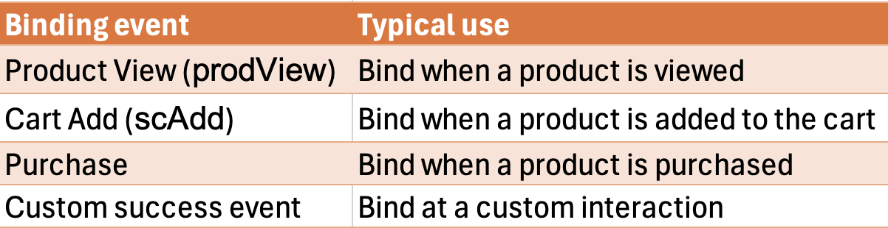
You can configure multiple binding events for the same merchandising eVar.
For example, you might configure:
- Product View
- Cart Add
- Purchase
If any configured binding event occurs on a hit containing products, Adobe attempts to bind the staged value to every product on that hit.
What about All?
By default, if no specific binding event is selected, Adobe uses All.
This means binding can occur whenever another event or eVar is present on a hit containing products.
One important distinction: Props do not trigger merchandising binding.
Example: Binding with a configured event
Consider this implementation.
Hit 1: Visitor performs an internal search
s.eVar1 = "internal keyword search";
s.eVar2 = "sandals";At this point:
- eVar1 has the value internal keyword search.
- eVar2 has the value sandals.
- Neither value is necessarily bound to a product yet.
Hit 2: Visitor views a sandal
s.products = ";sandal123";
s.events = "prodView";If prodView is configured as a binding event for both eVars:
- eVar1 binds internal keyword search to sandal123.
- eVar2 binds sandals to sandal123.
Both merchandising eVars are now associated with the product.
Later, when the visitor purchases the sandal, Adobe can attribute the purchase to the bound values.
This approach separates the process of capturing the finding method from the process of associating it with a product.
4. Understanding Allocation with Conversion Variable Syntax
This is where things become particularly interesting.
Let's walk through an example to understand how Allocation works when multiple binding attempts occur.
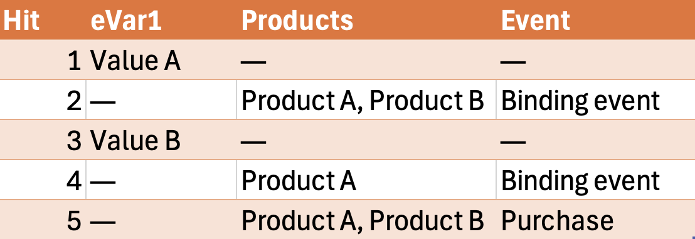
Let's understand what happens at each stage.
Hit 1: Value A is staged
s.eVar1 = "Value A";Value A is staged in the eVar.
Hit 2: Value A is bound to both products
s.products = ";productA,;productB";
s.events = "bindingEvent";Value A binds to both products.
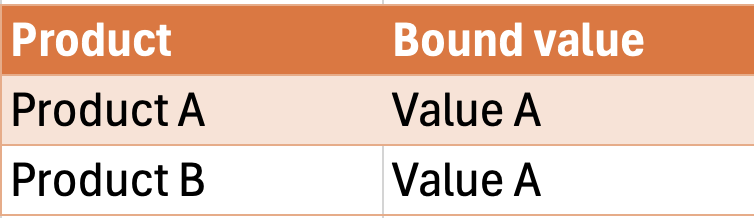
Hit 3: A new value is staged
s.eVar1 = "Value B";Value B replaces Value A in the staging area.
This is an important distinction: the staged value always reflects the most recently sent value, regardless of the Allocation setting.
However, the existing product bindings do not automatically change.
Hit 4: A new binding attempt occurs for Product A
s.products = ";productA";
s.events = "bindingEvent";Now Adobe attempts to bind Value B to Product A.
What happens depends on Allocation.
Original Value (First)
Product A already has Value A.
Therefore, Adobe ignores the new binding attempt.
Product B also remains bound to Value A.
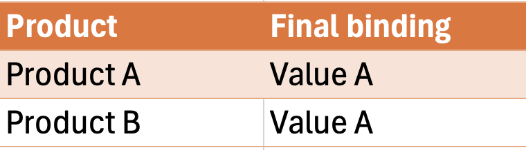
At Hit 5, both products are purchased.
All revenue is attributed to Value A.
Most Recent (Last)
Product A receives the new binding.
Product B does not appear on Hit 4, so its existing binding remains unchanged.
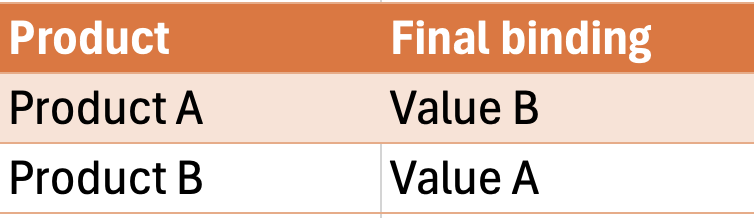
At Hit 5:
- Product A revenue goes to Value B.
- Product B revenue goes to Value A.
The important takeaway is that Allocation is evaluated independently for each product, not globally for the entire hit.
In other words, changing the binding for one product does not automatically change the binding for other products.
5. Product Syntax vs. Conversion Variable Syntax
Here is the comparison that matters most when designing an Adobe Analytics implementation.
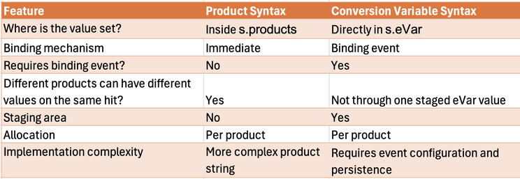
Neither approach is universally better. The right choice depends on the business requirement, data collection architecture, and the level of control needed over product-level attribution.
If the implementation requires different merchandising values for multiple products on the same hit, Product Syntax provides that flexibility.
If the implementation needs to capture finding method information separately and associate it with products at a later interaction, Conversion Variable Syntax is often easier to manage.
6. Real-World Implementation Example: Internal Product Finding Methods
Consider an e-commerce website selling footwear.
A customer searches for sandals using the internal search engine.
The website captures the following information:
s.eVar1 = "internal keyword search";
s.eVar2 = "sandals";
s.eVar3 = "non-internal campaign";
s.eVar4 = "non-browse";
s.eVar5 = "non-cross-sell";These eVars describe how the visitor found the product.
With Conversion Variable Syntax, you can stage these values on the search results page.
When the visitor views a sandal:
s.products = ";sandal123";
s.events = "prodView";If prodView is configured as a binding event for all five eVars, Adobe associates the staged values with the sandal.
You don't have to reconstruct a complicated product string containing five merchandising eVars.
With Product Syntax, you would need something like:
s.products =
";sandal123;;;;eVar2=sandals|eVar1=internal keyword search|eVar3=non-internal campaign|eVar4=non-browse|eVar5=non-cross-sell";You also need to carry the finding method information from the search results page to the product detail page, or make it available when a cart addition happens directly from the search results.
This is why Conversion Variable Syntax is often easier when working with multiple finding method dimensions.
Adobe's recommended configuration for product finding methods
Adobe recommends the following configuration for product finding method merchandising eVars:
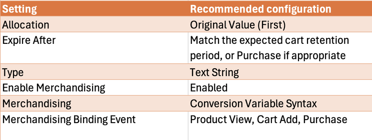
Why Original Value (First)?
Imagine a customer:
- Searches for sandals and adds sandal123 to the cart.
- The product is associated with internal keyword search.
- Three days later, the customer browses through Women → Shoes → Sandals.
- The customer views the same product again and purchases it.
With Most Recent (Last), the subsequent browse interaction can replace the original internal search association. The purchase is then credited to browse.
With Original Value (First), the original finding method retains credit.
This is why Adobe recommends Original Value (First) for product finding method eVars.
Expiration is equally important. If the product is not purchased and the binding expires, a subsequent finding method can establish a new association.
The expiration period should reflect the business's actual cart retention and purchasing behavior.
Documentation: Adobe Analytics – Merchandising eVars
7. The Most Important Concepts to Remember
For Adobe Analytics implementation and certification questions, remember these distinctions:
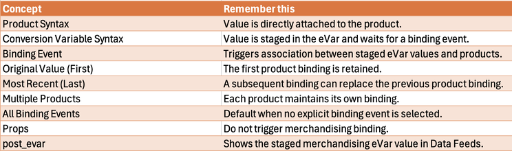
One additional consideration: Adobe does not recommend using the default Instances metric for merchandising eVars because its behavior does not necessarily reflect product-level bindings. This is particularly important when analyzing merchandising values in Data Feeds and Workspace.
8. What Does This Mean for Customer Journey Analytics (CJA)?
Although the discussion so far has focused on Adobe Analytics, the underlying concepts of merchandising, product-level association, and binding are equally relevant when working with Customer Journey Analytics.
In fact, Adobe has carried the merchandising concept into CJA through a capability explicitly called Binding, available through Data Views.
However, there is an important architectural difference.
CJA does not use eVars, props, or events in the traditional Adobe Analytics sense. Instead, it uses Experience Platform schemas and datasets, with dimensions and metrics configured through Data Views.
This means we should not simply replicate the traditional merchandising eVar configuration in CJA. We need to understand how the underlying data is modeled and how CJA's persistence and attribution capabilities can achieve the intended business outcome.
Let's revisit our e-commerce example.
A customer discovers Product A through an internal search and Product B through an email campaign. Both products are eventually purchased in the same transaction.
We want to answer business questions such as:
- Which finding method contributed to the revenue of each product?
- Which campaign influenced product discovery?
- How much revenue should be attributed to internal search versus external campaigns?
- How do individual product interactions contribute to overall customer journey performance?
Simply capturing the finding method and applying a First Touch or Last Touch attribution model is not necessarily sufficient.
We need to ensure that the finding method is associated with the correct product.
This is where CJA's Binding capability becomes particularly important.
8.1 Understanding Binding in CJA
CJA offers several ways to persist dimension values beyond the event on which they were initially captured.
One of these persistence methods is called Binding.
Adobe describes Binding as the evolution of the merchandising concept from earlier versions of Adobe Analytics.
It is particularly useful when working with XDM arrays of objects.
For example, consider an e-commerce event containing multiple products:
{
"PersonID": "12345",
"product": [
{ "name": "Product A", "price": 50 },
{ "name": "Product B", "price": 30 }
],
"purchase": 1
}Imagine that Product A was discovered through internal search, while Product B was discovered through an email campaign.
We want the appropriate finding method to be associated with each product rather than applying one value indiscriminately to the entire transaction.
CJA Binding allows a dimension to be associated with an appropriate dimension within an object array.
For example, we can bind a finding method dimension to Product Name.
When the same product appears in a subsequent event, CJA can recall the associated finding method and carry it forward.
This is particularly useful when product attributes are captured during product discovery but are not repeated in the subsequent purchase event.
8.2 Binding Dimensions and Binding Metrics
CJA provides two important configuration concepts that help implement this functionality.
Binding Dimension
A Binding Dimension establishes the relationship between a dimension that needs to persist and another dimension that identifies the object to which it belongs.
For example:
- Finding Method: Internal Search
- Product Name: Product A
By binding Finding Method to Product Name, CJA can associate the finding method with the appropriate product rather than applying it indiscriminately to every product in a subsequent event.
Consider another example from Adobe's documentation.
A customer views a washing machine with the following attributes:
{
"product": [
{ "name": "Washing Machine 2000", "color": "white", "type": "front loader" }
]
}Later, the customer views a dryer:
{
"product": [
{ "name": "Dryer 2000", "color": "neon orange" }
]
}Finally, the customer purchases both products:
{
"orders": 1,
"product": [
{ "name": "Washing Machine 2000", "price": 1600 },
{ "name": "Dryer 2000", "price": 499 }
]
}Notice that the purchase event does not contain the product color.
Without an appropriate binding relationship, persisting the product color across events could lead to incorrect attribution.
For example, the latest color value could be incorrectly associated with both products.
By binding Product Color to Product Name, CJA can maintain the correct association:
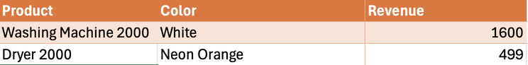
This is a good illustration of why Binding is important when working with arrays of objects.
Binding Metric
A Binding Metric acts as a trigger for a binding relationship when the selected dimension is at a higher level than the binding dimension within an object array.
Consider an internal search scenario.
A visitor searches for "Boxing Gloves".
The search results page captures:
- Search Term: Boxing Gloves
- Searches Metric: 1
- Products displayed in the product array.
The customer selects one product and adds it to the cart.
We want the search term to receive credit for the appropriate product rather than being indiscriminately associated with all products in a later transaction.
We can configure:
- Search Term as the dimension to persist.
- Product Name as the Binding Dimension.
- Searches as the Binding Metric.
The Searches metric triggers the binding when the search term and product information are present on the relevant event.
CJA associates the search term with the product names in the object array. When those products appear in subsequent events, the associated search term can be carried forward.
An important distinction: a Binding Metric is not required in every CJA binding scenario. Adobe automatically detects the relationship between the selected dimension and binding dimension. When the binding dimension exists within an object array and the selected dimension is at a higher level, a Binding Metric is required to trigger the association.
This is different from Adobe Analytics, where Conversion Variable Syntax uses configured Merchandising Binding Events.
Read more: Adobe – Use Binding Dimensions and Metrics in Customer Journey Analytics
8.3 Understanding Data Granularity and Relationships
Another important consideration when implementing CJA is understanding the granularity of the underlying data.
Unlike traditional Adobe Analytics implementations, where the products variable provides a predefined product-level structure, CJA relies on the XDM schema and the relationships represented within the datasets.
For an e-commerce implementation, we should understand whether the data represents:
- Customer interaction or event.
- Product interaction.
- Individual order line.
- Order or transaction.
- Customer-level information.
For example, an order containing three products should preserve the individual product attributes and their relationships to the order.
This is important because a customer-level or event-level finding method should not automatically receive credit for every product in a transaction unless that is the intended business logic.
The XDM object array structure, together with the appropriate binding configuration, helps address these requirements.
8.4 Understanding Persistence, Allocation, and Attribution in CJA
There is another important difference worth highlighting.
In Adobe Analytics, merchandising eVar allocation determines whether the original or most recent product binding receives credit.
In CJA, dimension persistence provides allocation options through Data View settings.
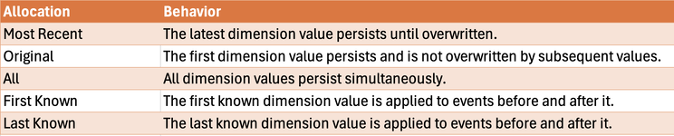
CJA also provides expiration settings that determine how long a dimension value persists.
These include Session, Person Reporting Window, Custom Time, and Metric-based expiration.
It is important to distinguish two concepts here:
Dimension Persistence and Allocation
Determines which dimension value persists and how it is associated with subsequent events.
Metric Attribution
Determines how conversion credit is distributed among dimension values within a defined attribution scope and lookback window.
CJA supports attribution models such as:
- First Touch
- Last Touch
- Linear
- U-Shaped
- J-Shaped
- Inverse J
- Participation
These are configured through metric attribution settings in Data Views and Analysis Workspace.
An important technical distinction is that when a non-default attribution model is applied to a metric in a report, that attribution model overrides the allocation setting configured on the dimension for that report. Therefore, persistence allocation and metric attribution should not be treated as interchangeable settings.
For product-level use cases, understanding both configurations is important.
References:
8.5 Adobe Analytics Merchandising vs. CJA Binding: Bringing It Together
This is perhaps the most important takeaway when moving from Adobe Analytics to CJA.
The concepts are related, but the implementation is not identical.
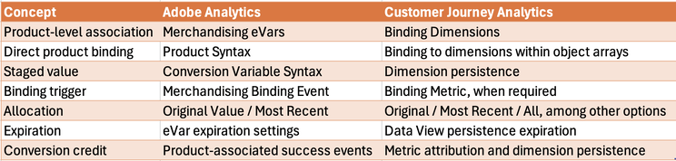
The important point is that CJA provides a flexible approach to achieving product-level analytical relationships through its Data View configuration and XDM data model.
Rather than simply migrating the old Adobe Analytics variable configuration, we should understand the business requirement and design the appropriate relationships in CJA.
8.6 Designing Around Business Requirements
Ultimately, the objective is not to replicate every Adobe Analytics merchandising eVar configuration in CJA.
Instead, we should design the Experience Platform data model and CJA Data Views around the business questions we need to answer.
Some important considerations include:
1. Data Granularity
Ensure product-level information is represented at the appropriate level, particularly when multiple products exist within the same transaction.
2. Data Relationships
Model product identifiers, order identifiers, customer identities, and finding method attributes appropriately.
3. Binding
Use Binding Dimensions and Binding Metrics where necessary to associate higher-level interactions, such as search terms, with individual products.
4. Persistence and Allocation
Configure dimension persistence and expiration based on the intended business rules.
5. Attribution
Select the appropriate metric attribution model, container, and lookback window based on the business question.
The objective is not just to make the data available in CJA. It is to ensure that the data is structured, associated, and attributed in a way that supports meaningful analysis and accurate business interpretation.
9. Final Thoughts
Merchandising eVars are a good example of how a seemingly small implementation decision can have a significant impact on reporting and business interpretation.
Understanding the difference between Product Syntax and Conversion Variable Syntax, when binding occurs, and how Allocation influences product-level associations helps us make better implementation decisions and avoid misleading attribution results.
More importantly, these concepts reinforce a broader principle that applies beyond Adobe Analytics.
Adobe Analytics Merchandising → CJA Binding Dimensions and Metrics
The underlying business objective remains the same: associate the right interaction with the right product and ensure that the resulting data supports accurate analysis.
Whether you are working with Adobe Analytics or Customer Journey Analytics, understanding these relationships is essential to building reliable measurement solutions and delivering insights that the business can confidently act upon.
Collecting the data is only one part of the equation. Understanding how the data is associated, persisted, attributed, and modeled is what ultimately makes it useful for business decision-making.
References and Further Reading
For readers who want to explore the concepts in more detail, here are the relevant Adobe Experience League resources:
Adobe Analytics
- Merchandising eVars – Understanding Product Syntax and Conversion Variable Syntax
- Implementing Merchandising eVars
- Conversion Variables – Admin Guide
Customer Journey Analytics
- Use Binding Dimensions and Metrics in Customer Journey Analytics
- Persistence Component Settings
- Attribution Component Settings
- Customer Journey Analytics FAQ
#AdobeAnalytics #CustomerJourneyAnalytics #CJA #AdobeExperiencePlatform #DigitalAnalytics #DataAnalytics #MarketingAnalytics #Attribution #Adobe